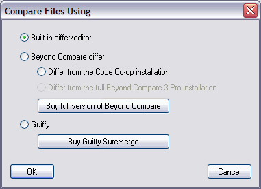

You can select the program used by Code Co-op to compare files (for instance, in the Check-in Area, or in the History tab): One option is to use the built-in Differ; or use Scooter Software's Beyond Compare Differ, which is included in the Code Co-op distribution; or Guiffy SureMerge, which you have to purchase separately.

To select which differ you would like to use with Code Co-op, select Tools > Differ and click the appropriate radio button.